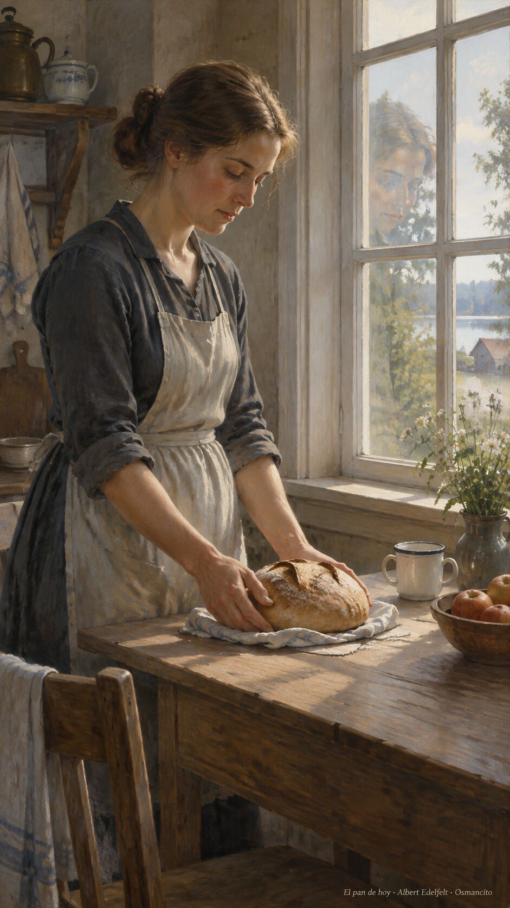
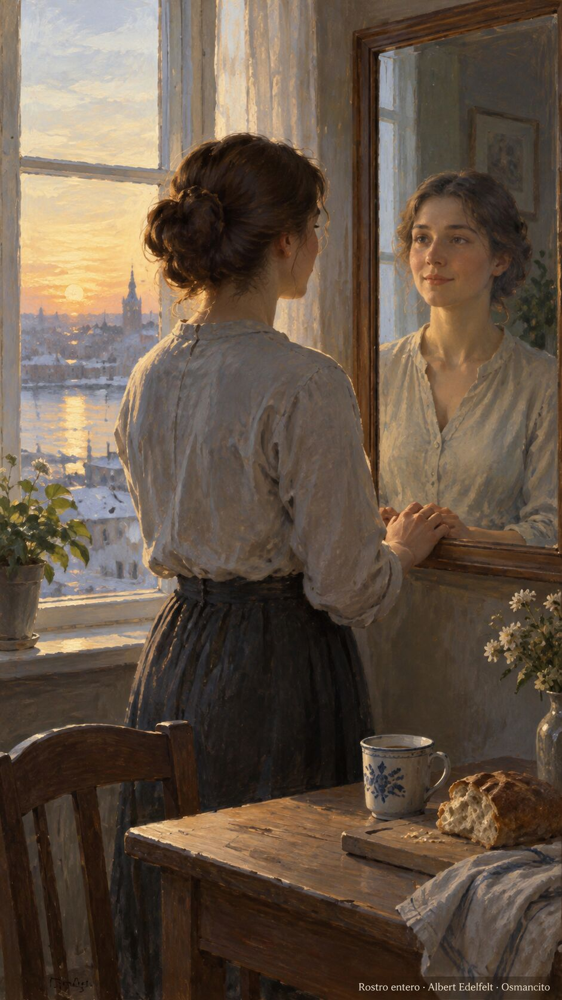
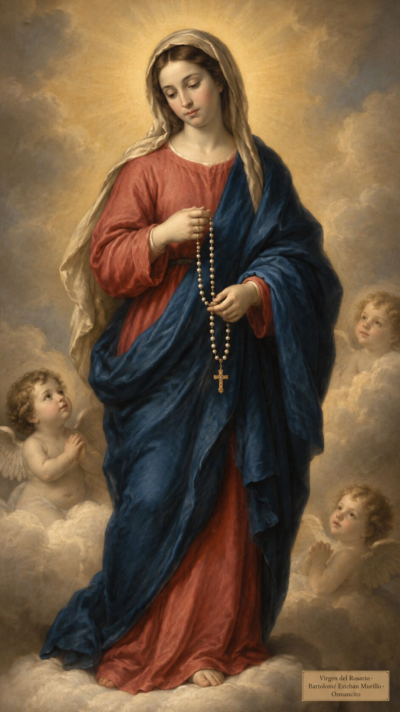
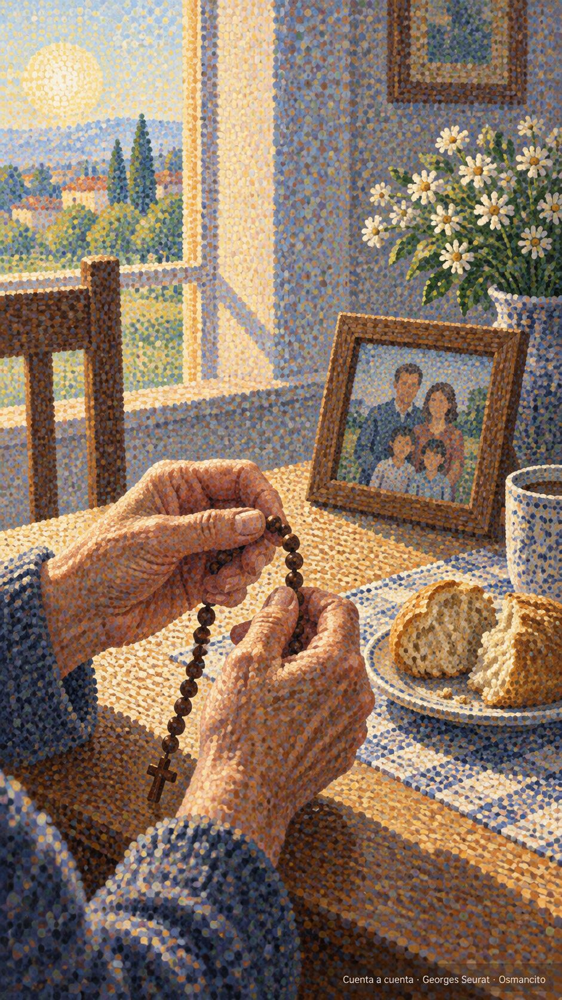
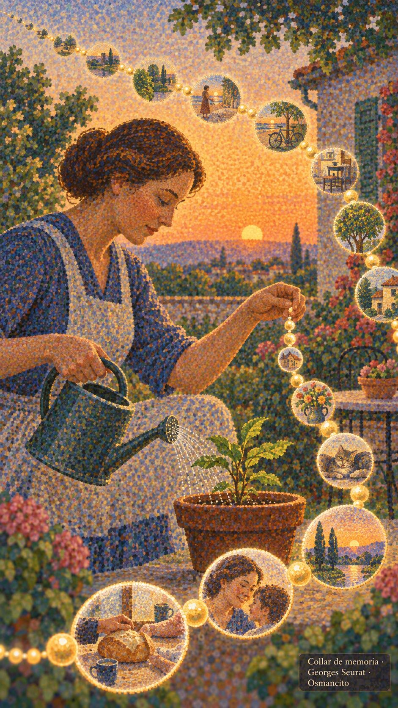

7 de octubre de 2026
¡Buenos días!
El pan de hoy y el rostro entero
Hay una manera de vivir con el rostro dividido: decir una cosa y hacer otra, por miedo a desagradar.
La verdad no pide tanto: solo que lo de adentro y lo de afuera coincidan. Pedir poco, dar gracias, empezar de nuevo cada día, como quien respira.
Lo que rescata no es la fuerza propia sino la confianza simple, esa que se anima a pedir el pan de hoy y nada más.


¡Feliz miércoles 7 de octubre!
En memoria de Nuestra Señora...
La Virgen del Rosario
A ella, que enseña a contar lo bueno con los dedos, le cantamos bajito, como quien reza sin darse cuenta. Madre de la paciencia, teje el tiempo en cuentas y guarda cada nombre en el bolsillo del manto. A su sombra caben todos los cansados.
Que hoy la casa huela a pan, la mesa se llene, y nadie se vaya sin haber dicho, al menos una vez, gracias en voz alta.

¡Feliz día de la Virgen del Rosario!
Cuenta a cuenta
Contar de a uno, con los dedos, lo que se agradece: una cuenta por cada pan, cada rostro, cada tarde que no dolió. Así la memoria se vuelve collar y el tiempo, cuenta a cuenta, se ensarta. No hacen falta palabras grandes: basta repetir con cariño lo pequeño, como quien riega. La repetición, bien querida, no es costumbre vacía: es la escalera corta que baja el alma hasta lo cotidiano y lo encuentra bueno.

